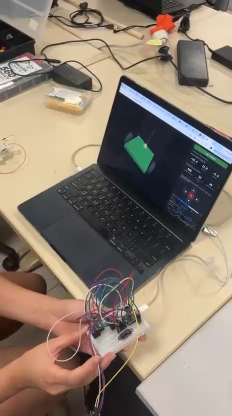
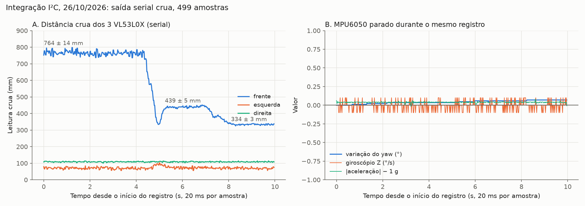
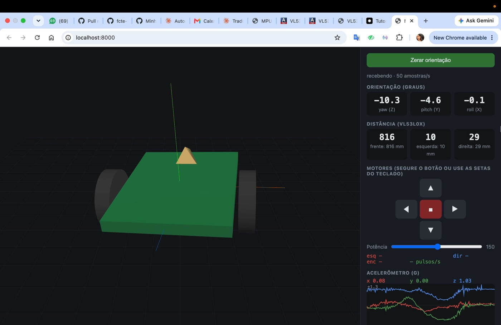
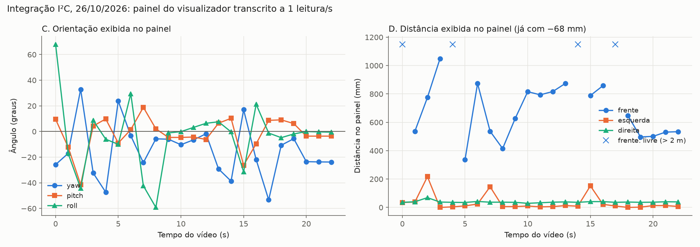

Integração dos sensores I²C: 3 VL53L0X e MPU6050¶
Escopo deste registro
Teste de bancada dos três VL53L0X e do MPU6050 ligados ao mesmo tempo no barramento I²C de um ESP32-C3 Super Mini, no protótipo em protoboard, com alimentação pela USB. Usa a pinagem do repositório brun0duarte/micromouse (SDA no GPIO6, SCL no GPIO7). Não é a placa Rev 2.0 do projeto nem o firmware do robô. Os motores e o encoder não foram acionados: o firmware usado não envia comandos a eles (ver Firmware).
| Item | Valor |
|---|---|
| Componentes | 3 × VL53L0X (frente, esquerda, direita) e 1 × MPU6050, no mesmo I²C |
| Requisitos | Percepção das paredes (#175, HU-02 / RF02) e orientação pela IMU (#378); integração sensores → MCU (#99, #106) |
| Data da execução | 26/10/2026 |
| Executado por | Ana Carolina Fialho e equipe de eletrônica |
| Tipo de teste | Integração em bancada, com os sensores reais; registro serial cru (499 amostras) e vídeo do painel (22,6 s) |
| Resultado | Sucesso parcial. Os 4 dispositivos responderam juntos durante todo o registro, a 50 amostras/s. O sensor da frente e a IMU responderam como esperado; a resposta do sensor da direita não foi demonstrada, e os motores ficaram fora do teste |
Objetivo¶
- Verificar se os quatro dispositivos I²C iniciam e respondem ao mesmo tempo no mesmo barramento, cada VL53L0X no seu endereço.
- Verificar se a leitura acompanha o que acontece na bancada: a distância muda quando o anteparo se move, e a orientação muda quando a protoboard gira.
- Medir o ruído de cada sensor com a montagem parada e a taxa de amostragem efetiva.
Montagem¶

Figura 1. Quadro do vídeo da bancada (10 s): a protoboard com os três VL53L0X e o MPU6050 é girada à mão, e o painel no computador acompanha o movimento.
| Item | Detalhe |
|---|---|
| Placa | ESP32-C3 Super Mini, alimentado e lido pela USB-C do computador |
| Barramento I²C | SDA no GPIO6, SCL no GPIO7, 400 kHz; todos os sensores em 3V3 e GND da placa |
| VL53L0X | Frente com XSHUT solto (0x30), esquerda com XSHUT no GPIO9 (0x31), direita com XSHUT no GPIO8 (0x29) |
| MPU6050 | Endereço 0x68, INT e AD0 soltos |
| Firmware | hw/testes/firmware/integracao-sensores-i2c, detalhado abaixo |
| Painel | visualizador/servidor.py do repositório micromouse, aberto em http://localhost:8000 |
As distâncias do painel têm 68 mm descontados
Para a calibração (7.3.1), o painel do visualizador foi alterado localmente para descontar 68 mm de todas as distâncias. Essa alteração ainda estava ativa durante este ensaio. Por isso, as distâncias que aparecem nos vídeos e na Figura 4 são a leitura crua menos 68 mm, com piso em 0. O registro serial (Figura 2) traz a leitura crua, sem desconto.
Firmware¶
O código gravado no ESP32-C3 está no repositório, exatamente como foi usado, em hw/testes/firmware/integracao-sensores-i2c/src/main.cpp. Ele foi compilado de novo na mesma plataforma do firmware do projeto (espressif32@7.1.3), sem avisos: RAM 4,4% e Flash 21,4%.
Na partida, o firmware:
- Libera o barramento I²C com 9 pulsos de clock e um STOP, caso um sensor tenha ficado preso no meio de uma leitura, e inicia o
Wirea 400 kHz. - Inicia os VL53L0X um por vez pelos XSHUT: desliga o esquerdo e o direito, configura o da frente para 0x30, liga o esquerdo e o configura para 0x31, liga o direito e o deixa em 0x29. Cada sensor fica em medição contínua.
- Inicia o MPU6050 com o DMP (que calcula a orientação dentro do sensor) e calibra só o giroscópio, com a montagem parada.
No loop(), a cada 20 ms, o firmware lê os sensores que têm medida nova e envia uma linha:
| Colunas | Conteúdo | Unidade |
|---|---|---|
w,x,y,z |
Quaternion da orientação (DMP) | — |
ax,ay,az |
Acelerômetro | g |
gx,gy,gz |
Giroscópio | graus/s |
frente,esquerda,direita |
Distância crua de cada VL53L0X | mm; -1 = nada a menos de 2 m; -2 = sensor não respondeu |
O que este firmware não faz
O comentário do cabeçalho descreve 17 colunas e comandos para os motores, mas o código envia só as 13 colunas acima, e a leitura de comandos está comentada. Os motores e o encoder não foram testados neste ensaio. As demais diferenças entre o comentário e o código estão no README do firmware.
Procedimento¶
- Montar os quatro sensores na protoboard conforme a tabela de montagem e ligar o ESP32-C3 na USB.
- Gravar o firmware (
pio run -t upload) e deixar a protoboard parada durante a calibração do giroscópio. - Registro serial: com a protoboard parada, ler a saída no terminal e aproximar um anteparo do sensor da frente em etapas. A saída foi copiada do terminal (
serial_bruto.txt). - Painel: abrir o visualizador, segurar a protoboard e girá-la à mão nos três eixos, apontando os sensores para objetos a distâncias diferentes. O ensaio foi filmado com o celular e com a gravação de tela, ao mesmo tempo.
- Transcrever os valores do painel a 1 leitura por segundo (
painel_1hz.csv) e gerar os gráficos comdocs/scripts/grafico_integracao_i2c.py.
Critérios de avaliação¶
Definidos para este registro, a partir dos itens 3.2 e 3.4 da tabela de testes:
| # | Critério | Como foi verificado |
|---|---|---|
| C1 | Os 4 dispositivos respondem juntos, sem nenhum -2 (sensor sem resposta) |
Registro serial e painel |
| C2 | Taxa de envio de 50 amostras/s, a do firmware | Contador do painel |
| C3 | O sensor da frente acompanha o anteparo, com desvio-padrão de até 15 mm com ele parado | Registro serial |
| C4 | A IMU parada mede cerca de 1 g, giro próximo de 0 °/s e orientação sem deriva visível | Registro serial |
| C5 | A orientação no painel acompanha o giro feito à mão | Vídeos |
| C6 | Os sensores da esquerda e da direita mudam de leitura com um obstáculo à frente deles | Vídeos e painel |
Resultados¶
Registro serial com a montagem parada¶

Figura 2. Saída serial crua: 499 amostras seguidas (cerca de 10 s, a 20 ms por amostra). A: o anteparo da frente foi aproximado em três patamares. B: o MPU6050 parado no mesmo intervalo.
| Patamar do anteparo (frente) | Amostras | Frente: média ± desvio | Esquerda: média ± desvio | Direita: média ± desvio |
|---|---|---|---|---|
| Longe | 0 a 219 | 763,8 ± 13,5 mm | 70,4 ± 5,7 mm | 108,5 ± 2,2 mm |
| Médio | 262 a 355 | 439,1 ± 5,2 mm | 73,5 ± 6,1 mm | 108,3 ± 2,3 mm |
| Perto | 405 a 498 | 333,9 ± 3,0 mm | 69,5 ± 4,7 mm | 108,5 ± 1,9 mm |
As distâncias reais do anteparo não foram medidas com régua, então esta tabela mostra repetibilidade, não exatidão. Para a exatidão do sensor da frente, ver a calibração.
| MPU6050 parado (499 amostras) | X | Y | Z |
|---|---|---|---|
| Acelerômetro: média ± desvio | 0,069 ± 0,003 g | −0,011 ± 0,003 g | 1,036 ± 0,007 g |
| Giroscópio: média ± desvio | −0,18 ± 0,06 °/s | 0,05 ± 0,09 °/s | −0,01 ± 0,06 °/s |
- Nenhum
-2nem-1nas 499 amostras: os três VL53L0X responderam o tempo todo. - Módulo da aceleração parada: 1,039 g, 4% acima de 1 g. Isso confirma o que o registro 3.6 já tinha visto (1,03 g): o acelerômetro precisa de calibração, que o firmware não faz.
- Giroscópio: depois da calibração da partida, o offset ficou abaixo de 0,2 °/s nos três eixos. O maior pico foi de −0,9 °/s no eixo Y, em uma amostra.
- Orientação: o yaw calculado pelo DMP foi de 13,39° a 13,46° no registro inteiro, ou seja, 0,07° de deriva em cerca de 10 s.
- Leituras repetidas: em 72 das 499 amostras (14%), as três distâncias são iguais às da amostra anterior. Isso é esperado, porque o firmware envia a cada 20 ms e cada VL53L0X gera uma medida nova a cada ~33 ms.
- Esquerda e direita quase constantes: de 56 a 102 mm (esquerda) e de 101 a 114 mm (direita), cruas, nos três patamares. Pela calibração, o módulo lê de 57 a 86 mm a mais. Esses valores, portanto, indicam algo a poucos centímetros dos dois sensores durante o registro, provavelmente os fios ou a própria protoboard. Isso não foi verificado na bancada.
Painel com a protoboard girada à mão¶
Vídeo 1. Gravação da tela do visualizador durante o ensaio (22,6 s). Arquivo: docs/videos/integracao-i2c-tela.mp4.
Vídeo 2. Mesmo ensaio, filmado com o celular: a protoboard sendo girada e o painel respondendo (22,6 s). Arquivo: docs/videos/integracao-i2c-bancada.mp4.

Figura 3. Painel aos 10 s do Vídeo 1: 50 amostras/s; yaw −10,3°, pitch −4,6°, roll −0,1°; frente 816 mm, esquerda 10 mm e direita 29 mm (já com −68 mm); acelerômetro 0,08 / 0,00 / 1,03 g. Os campos dos motores ("esq —", "enc —") estão vazios porque o firmware não envia essas colunas.

Figura 4. Valores do painel transcritos a cada 1 s do Vídeo 1. C: orientação. D: distâncias, já com o desconto de 68 mm; os "×" marcam os instantes em que o painel mostrou a frente como "livre" (nada a menos de 2 m).
| Medida (23 leituras do painel, 0 a 22 s) | Faixa observada |
|---|---|
| Taxa | 49 a 51 amostras/s |
| Yaw | −53,3° a 32,9° |
| Pitch | −41,4° a 18,9° |
| Roll | −59,2° a 68,0° |
| Frente | 337 a 1.048 mm, e "livre" em 4 das 23 leituras |
| Esquerda | 0 a 217 mm; acima de 140 mm em 3 leituras (2, 7 e 15 s), com a protoboard inclinada |
| Direita | 29 a 69 mm |
- O modelo 3D acompanhou todos os giros, inclinações e rotações feitos à mão. Nas últimas 3 leituras (20 a 22 s), com a protoboard parada, a orientação ficou estável (yaw −23,5° a −23,8°, pitch −3,6°).
- Durante os 22,6 s, os valores continuaram mudando até o fim. O congelamento visto no registro 3.6 depois de "Zerar orientação" não apareceu, mas não há registro de o botão ter sido apertado neste ensaio.
Avaliação dos critérios¶
| # | Critério | Resultado | Situação |
|---|---|---|---|
| C1 | 4 dispositivos juntos, sem -2 |
Nenhum -2 nas 499 amostras seriais nem nas 23 leituras do painel |
Atendido |
| C2 | 50 amostras/s | 49 a 51 amostras/s no painel | Atendido |
| C3 | Frente acompanha o anteparo, desvio ≤ 15 mm | Três patamares distintos (764, 439 e 334 mm crus), com desvio de 13,5, 5,2 e 3,0 mm | Atendido |
| C4 | IMU parada coerente | 1,039 g, giro < 0,2 °/s, yaw com 0,07° de deriva em ~10 s | Atendido, com o acelerômetro 4% alto |
| C5 | Orientação acompanha o giro | Modelo 3D acompanhou o movimento nos 22,6 s dos vídeos | Atendido (qualitativo) |
| C6 | Esquerda e direita respondem a obstáculo | Esquerda subiu para 146 a 217 mm em 3 momentos; a direita ficou entre 29 e 69 mm o tempo todo | Esquerda atendido; direita não demonstrado |
Conclusão¶
- O barramento I²C compartilhado funciona com os 4 dispositivos. Os três VL53L0X, cada um no seu endereço, e o MPU6050 responderam juntos durante todo o ensaio, sem nenhuma falha de leitura, a 50 amostras/s.
- O sensor da frente e a IMU se comportaram como esperado. A frente separou bem três distâncias, com ruído de 3 a 14 mm. A IMU parada não derivou de forma visível em 10 s e acompanhou o giro feito à mão.
- O acelerômetro lê cerca de 4% a mais em repouso (1,04 g), o mesmo que o registro 3.6. Antes de usar a aceleração no robô, ele precisa de calibração.
- O sensor da direita não teve a resposta demonstrada. Ele leu um valor quase constante, compatível com algo encostado nele (provavelmente fios). O da esquerda respondeu quando a protoboard foi inclinada.
- Motores e encoder ficaram fora deste teste, porque o firmware não os aciona.
Pendências¶
- Sensor da direita: repetir com um anteparo controlado na frente dele e os fios afastados, para confirmar que a leitura muda.
- Exatidão com os 3 sensores juntos: repetir os patamares com régua (como na calibração) para a esquerda e a direita.
- Motores e encoder: incluir os comandos
M,esq,dire as colunas do encoder no firmware e repetir com o DRV8833 ligado, depois de refazer o conector do encoder (ver teste 3.3 na tabela). - Varredura I²C: registrar a varredura com os endereços 0x29, 0x30, 0x31 e 0x68 no log serial.
- Calibração do acelerômetro e um registro parado mais longo (30 s ou mais) para medir a deriva do giroscópio.
- "Zerar orientação": repetir apertando o botão, com o log serial gravado, para investigar o congelamento do registro 3.6.
- Placa Rev 2.0: repetir na placa definitiva, que usa outra pinagem (I²C em GPIO9/8, XSHUT em GPIO0/1/2).
Dados e reprodução¶
Os registros estão em hw/testes/registros/integracao-2026-10-26:
| Arquivo | Conteúdo |
|---|---|
serial_bruto.txt |
Saída serial copiada do terminal, sem edição. Cada amostra aparece em duas linhas, sem a vírgula entre gz e frente |
serial.csv |
As 499 amostras completas, com as distâncias cruas |
painel_1hz.csv |
Painel transcrito a 1 leitura/s (distâncias com −68 mm) |
quadros/ |
Quadros da gravação da tela a cada 2 s |
grafico_integracao_i2c.py |
Gera as Figuras 2 e 4 e imprime os números das tabelas |
Para repetir: grave o firmware de hw/testes/firmware/integracao-sensores-i2c, copie a saída do pio device monitor para um arquivo e rode o script sobre a pasta dos registros.
Histórico de versões¶
| Versão | Data | Descrição | Autor | Revisor |
|---|---|---|---|---|
| 1.0 | 26/10/2026 | Integração dos 3 VL53L0X e do MPU6050 no I²C: firmware, registro serial, vídeos, painel transcrito e avaliação | Ana Carolina Fialho | — |